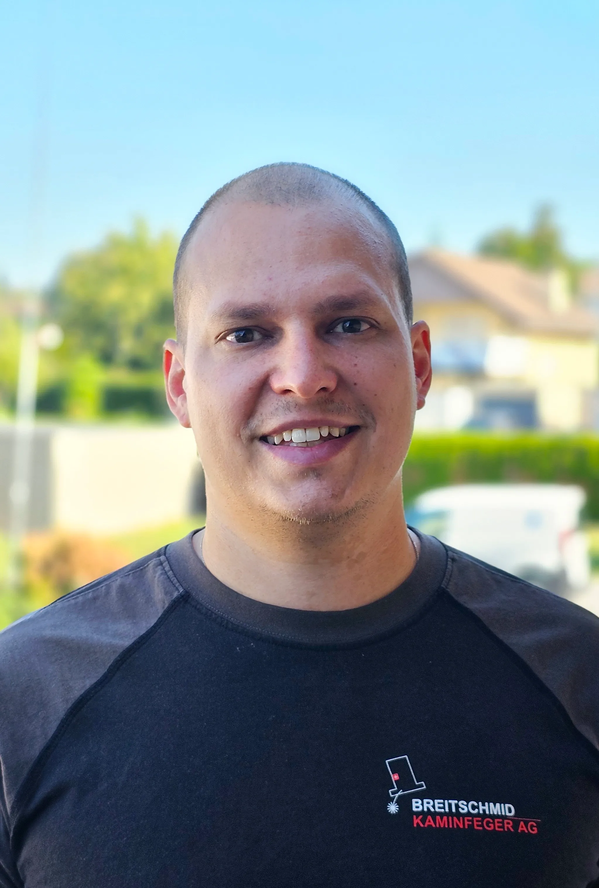
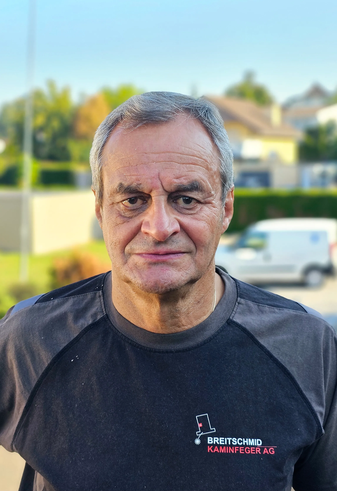
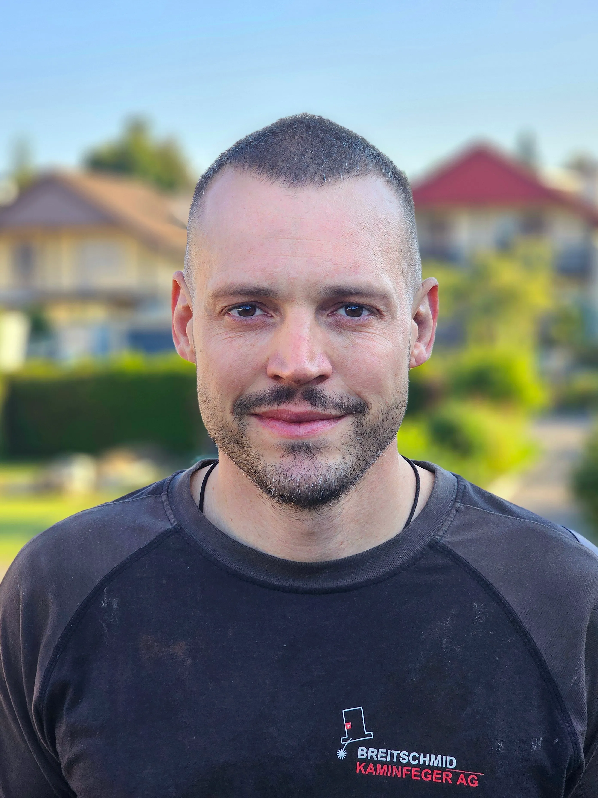
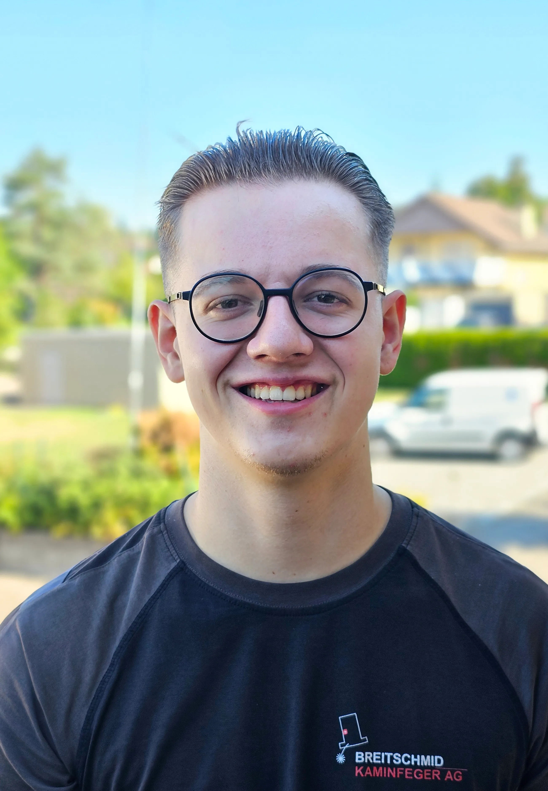
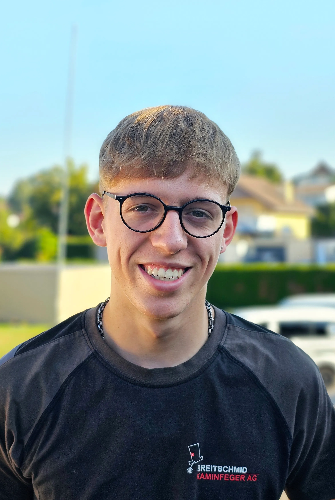
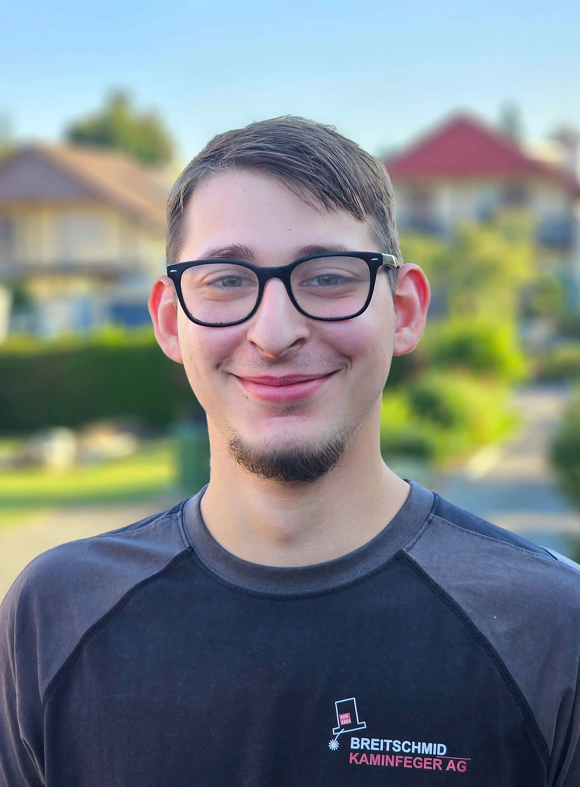
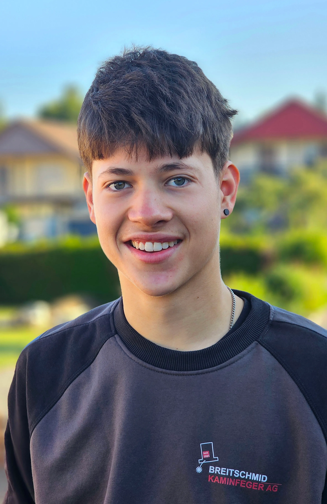

145 Jahre, 5 Generationen, 1 Firma
Seit 1881 sind wir für unsere Kundinnen und Kunden im Freiamt da und geniessen ihr Vertrauen. Wir sind ein innovatives Familienunternehmen mit bestens ausgebildetem Fachpersonal.

Aus- und Weiterbildung im Fokus
Neue Techniken, neue Entwicklungen, neue Lösungsansätze, neue Ansprüche: Die Anforderungen an die Wärmeerzeugung werden immer grösser und komplexer. Unser Ziel ist es, die Energiewende erfolgreich zu meistern. Dafür müssen nicht nur die Wärmeerzeugungssysteme immer besser und effizienter werden – das Gleiche gilt für uns selbst. Deshalb bilden wir uns stetig weiter, für die Umwelt und die Betriebssicherheit Ihrer Anlage.
Als Lehrbetrieb bilden wir seit über 70 Jahren junge Fachleute aus. Hansruedi Breitschmid engagiert sich seit über 25 Jahren als Lehrlingsobmann im Kanton Aargau für motivierten Nachwuchs.
Feuer und Energie sind unsere Fachgebiete
Als Kaminfegerbetrieb beugen wir seit 145 Jahren Bränden vor und kümmern uns um einen energieeffizienten Einsatz von Brennstoffen. Seit über 30 Jahren suchen wir schutzzielorientierte Lösungen, um Brände zu verhindern und Leben zu retten.
Wir sind Fachspezialist im kommunalen Brandschutz und in der Beratung von Bauherrschaften und Fachplanern bei Brandschutzfragen. Wir setzen uns täglich dafür ein, Energie einzusparen und sinnvoll zu nutzen.
Generationenwechsel
Von 1992 bis 2025 lag die Leitung der Breitschmid Kaminfeger AG in den Händen von Hansruedi Breitschmid. Nach gut 30 Jahren voller Einsatz und Engagement hat die fünfte Generation das Ruder übernommen.
Rafael Breitschmid bringt durch seine Erfahrung als Heizungsplaner, Kaminfeger und Gebäudetechnikingenieur HLKS gebündeltes Wissen über Brandschutz, wärmetechnische Anlagen und Gebäudetechnik in die Firma.
Fünf Generationen Kaminfeger
- 1881 – 1927Jakob Breitschmid
- 1927 – 1962Ernst Breitschmid
- 1962 – 1992Willi Breitschmid
- 1992 – 2025Hansruedi Breitschmid
- seit 2025Rafael Breitschmid
Unser Team
Fachleute mit eidgenössischen Abschlüssen, langjähriger Erfahrung und viel Engagement für den Nachwuchs.

Rafael Breitschmid
- Haustechnikplaner Heizung
- Kaminfeger EFZ
- BSc in Gebäudetechnik HLKS
- Brandschutzfachmann VKF
- Feuerungskontrolleur mit eidg. Fachausweis
- Berufsbildner

Hansruedi Breitschmid
- Eidg. dipl. Kaminfegermeister
- Brandschutzfachmann SKMV/CEPA
- Feuerungskontrolleur mit eidg. Fachausweis
Flavia Breitschmid
- Buchhaltung

Florian Stahel
- Kaminfeger
- Büro / Arbeitsplanung

Christoph Steger
- Kaminfeger EFZ
- Feuerungskontrolleur Öl/Gas/Holz
- Berufsbildner

Jan Reichenbach
- Kaminfeger EFZ

Reto Zimmermann
- Kaminfeger EFZ

Simone Crivelli
- Lernender Kaminfeger EFZ

Jan von Bergen
- Lernender Kaminfeger EFZ
Wir haben Ihr Interesse geweckt?
Kontaktieren Sie uns unverbindlich – wir beraten Sie gerne persönlich.